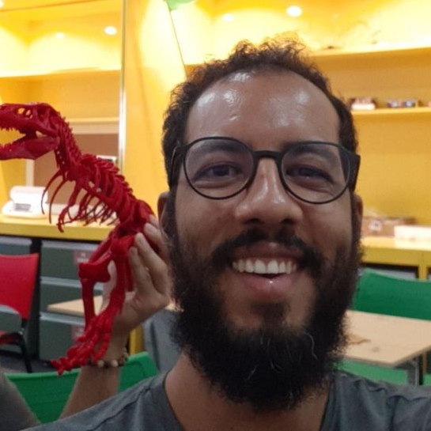
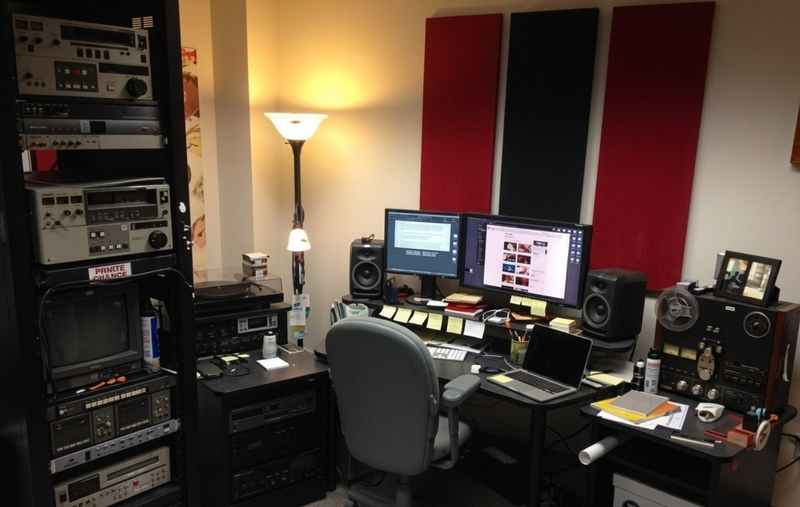

Farinha, IA e o acesso aos acervos
Software livre para difusão e mediação algorítmica de acervos
Escritório Regional Nordeste do Arquivo Nacional/MGI
LABHDUFBA
29 de maio de 2026
Quem sou eu?
Quem sou eu?
- Chefe do Escritório Regional Nordeste do Arquivo Nacional (2025–)
- Arquivista da UFBA (2010–2025*)
- Arquivista e responsável pelo setor de TI do Arquivo Público da Bahia (2007–2009)
- Membro do LABHDUFBA – Laboratório de Humanidades Digitais da UFBA (2024–)
- Coordenador do projeto de desenvolvimento do Farinha (2024–)
- Criador do projeto Arquivos da UFBA, Archives World Map e outros
- Membro do Raul Hacker Club (2016–)
- Mestre em Ciência da Informação pela UFBA (2010)
O problema: acervos que não chegam ao público
Acervos na gaveta digital
Muitos arquivos no Brasil já digitalizaram acervos, mas não têm plataforma de acesso.
- Acervos digitalizados “na gaveta”
- Buscas limitadas ou inexistentes
- Pesquisadores que não encontram o que precisam
- Instituições que não disponibilizam seus acervos online
O acesso é o elo que falta no ciclo documental.
Onde o Farinha se encaixa
Um acervo passa por várias etapas — e o Farinha atua no acesso:
- Produção — os documentos nascem (fotografias, registros, recortes)
- Tratamento técnico — organização, descrição, indexação, digitalização etc.
- Acesso — estabelecimento de plataforma, disponibilização de metadados, objetos digitais, mediação por IA
Farinha é plataforma de acesso: o momento em que o acervo encontra o público por meio digital.
A história do Farinha
Como chegamos ao Farinha
- 2007: Trabalho no Arquivo Público da Bahia — primeiro contato com o ICA-AtoM
- 2008: Tradução do ICA-AtoM; encontro com Peter Van Garderen (Goiânia)
- 2023: Tentativa de reunir bases dispersas da UFBA — centelha do projeto
- Um protótipo nasceu e foi batizado de Farinha
- “Todo mundo já usa Dendê… vamos chamar de outra coisa, Beatriz!”
- O amontoado mais relevante de partículas para os nordestinos e base primordial para a expansão da humanidade na Terra.
A equipe

Pablo Soares Programador sênior, Raul Hacker Club

Beatriz Alves Analista de TI, Dataprev

Cristian Privat Arquiteto de infraestrutura e cloud

Ricardo Sodré Arquivista, coordenador do projeto
~20 meses de trabalho voluntário, reuniões nas terças às 20h
Apoio: PNAB Bahia 2024 (bolsa), FAPESB INCITE II (hardware e bolsa)
O que o Farinha já faz
- Cadastro de instituições, setores e acervos (Fundos e Coleções)
- Busca textual nos registros cadastrados
- Importação em lote de acervos
- Campos personalizados nas Coleções
- Objetos digitais — inserção e visualização
- Portal inicial para consulta pública
Versão 0.2 (alfa) pública — e já em uso!
Diferencial: descreva no seu idioma
- Nem todo acervo segue a NOBRADE — e está tudo bem
- O Farinha permite campos personalizados nas Coleções
- Fundos seguem a norma; Coleções são flexíveis
- Fotografia, arte, cultura, memória — cada acervo tem sua linguagem
A rigidez normativa não pode ser barreira para o acesso.
Pense num arquivo fotográfico com milhares de imagens: cada foto precisa de campos que façam sentido para aquele acervo.

IA e mediação algorítmica
“Ricardo, cadê a IA?”
Uma nova geração de Inteligência Artificial chegou “ontem”: as LLM (Modelos de Linguagem de Grande Escala).
- Causaram impactos em diversas áreas do conhecimento
- Os Arquivos não “escaparam”
- Temos agora uma oportunidade de expandir as nossas ferramentas
RAG: o “funcionário antigo” do Arquivo
RAG (Retrieval-Augmented Generation) = busca semântica + geração de respostas
Imagine um funcionário antigo do Arquivo: leu tudo, tem memória mediana, mas às vezes alucina.
Um RAG básico se chama RAG Ingênuo (ou naive).
- Busca informações relevantes no acervo (embeddings)
- Gera uma resposta baseada nessas informações
- Modelo open-source, rodando em servidor local
- Nada de caixas pretas — software livre ou aberto
RAG Ingênuo: o básico funciona?
- ~12.750 fólios com recortes de jornais (décadas de 1980 e 1990)
- Modelo LLM: open-source, rodando localmente
- Sem engenharia avançada — é o teste mais básico possível
- O LABHDUFBA desenvolve tecnologias de RAG com técnicas de ponta
[Cenário A] Demo ao vivo: RAG Ingênuo
Coleção: Recortes de Jornais da Reitoria da UFBA
Façam suas perguntas! Perguntem como se estivesse enviando uma pergunta a um funcionário do Arquivo.
🔗 recortes.farinha.info
[Cenário B] Exemplo de RAG Ingênuo
Coleção: Recortes de Jornais da Reitoria da UFBA
Pergunta: “Qual o papel dos estudantes da UFBA em manifestações sociais registrados nos recortes de jornais?”
O RAG Ingênuo é fácil de fazer, mas não funcionará bem em boa parte das consultas. Um RAG bem feito precisa garantir verificabilidade das fontes, ser mais preciso e cobrir mais material sem perder a precisão.
O que o Farinha pode fazer por você
Para arquivistas e gestores de acervo
- Descreva acervos com NOBRADE ou com campos personalizados
- Importação em lote — traga seus dados para o Farinha
- Objetos digitais — documentos, fotografias, recortes
- Uma plataforma para instituições de qualquer porte
- Software livre AGPL-3.0 — sem custos de licença
Para pesquisadores e público
- Descubra acervos — navegue por instituições, fundos e coleções
- Busca textual — encontre documentos relevantes
- Explore via IA — faça perguntas ao acervo com RAG
- Archives World Map — localize instituições arquivísticas no mapa
🔗 archivesmap.org — o mapa dos arquivos do mundo
Para instituições culturais
- Desenvolvido no Brasil, por arquivistas e para arquivistas
- Software livre AGPL-3.0 — transparência e colaboração
- Instale na sua instituição ou use em nuvem
- Como participar: contribua com código, documentação, teste ou feedback
- O Farinha terá módulo nativo de RAG — mediação algorítmica integrada ao acervo
Perspectivas
O que vem por aí
- Versão 0.3 — importações em lote, portal aprimorado
- Versão 0.4 — consolidação das funções iniciais
- Módulo nativo de RAG — mediação algorítmica integrada ao Farinha
- Archives World Map — evolução contínua
- Parceria com o LABHDUFBA para técnicas avançadas de RAG
Em breve: RAG bem feito, com verificabilidade de fontes e precisão aprimorada.
Obrigado!
Contatos
📷 @todosaquelesarquivos 🌐 feudo.org 📧 ricardo@feudo.org
Institucional
📧 ricardo.andrade@gestao.an.gov.br 🌐 @arquivonacionalbrasil
Projeto
🌐 farinha.info 🌐 archivesmap.org 📷 @farinha.info · @labhdufba · @raulhackerclub